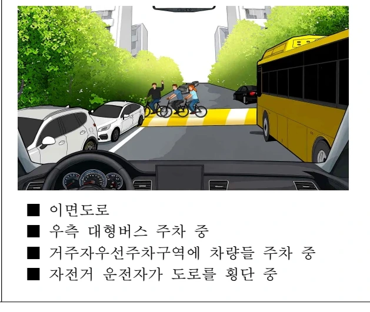

858. 在以下情况中，最安全的两种驾驶方法是？

- ①停放的车辆可能突然启动，因此持续鸣喇叭并迅速通过。
- ②由于停放车辆之间可能有行人突然出现，因此注意并低速行驶。
- ③为催促前方自行车通行而持续鸣喇叭。
- ④考虑前方减速带、自行车骑行者、视野受限等情况， 持续保持注意并谨慎驾驶。
- ⑤与前方自行车间距充足，故加速快速通过。
查看答案
答案
② 由于停放车辆之间可能有行人突然出现，因此注意并低速行驶。
④ 考虑前方减速带、自行车骑行者、视野受限等情况， 持续保持注意并谨慎驾驶。
依据
两边都停着汽车，前面有一辆自行车横穿马路，所以这是一个容易发生意外情况的路段。儿童或行人可能会突然从停放的车辆之间跳出来，因此请小心并缓慢行驶。最安全的驾驶方式是小心驾驶，考虑到前面有自行车、减速带和有限的能见度。另一方面，按喇叭快速行驶或在与自行车的距离足够的情况下加速行驶都是不正确的驾驶行为，可能会导致危险情况。
依据文字为学习用机器翻译。